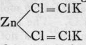

Water Of Crystallisation
Description
This section is from the book "Modern Chemistry", by William Ramsay. Also available from Amazon: Modern Chemistry: Theoretical and Modern Chemistry (Volume 2).
Water Of Crystallisation
The other halides of this group crystallise with water of crystallisation; its amount varies from 7 molecules, as in BaI2.7H2O, to 1 as in ZnCl2.H2O. The retention of this so-called " water of crystallisation " has not yet been satisfactorily explained. It was for long believed that such compounds were " molecular/' as opposed to atomic; that is, that the water molecules combined as wholes with the salt, and not by virtue of their atoms ; but it is more probably to be explained by the tetravalency of oxygen, although even with this assumption it is not easy to ascribe satisfactory constitutional formulae in all cases. It must at the same time be assumed that the halogen atoms are of a higher valency than unity ; possibly triad, or even pentad.
These salts are hydrolysed in solution to a small extent; thus a solution of magnesium chloride, besides containing a large number of ions, has also reacted with the water to form hydroxide and hydrogen chloride: MgCl2 + 2H(OH) = Mg(OH)2 + 2HCI. As the solution becomes concentrated on evaporation, the hydrogen chloride volatilises with a part of the water ; and a mixture, or rather a compound, of the oxide and chloride remains. Hence these chlorides cannot be obtained in a pure state by evaporating their solutions. They exhibit another property, however, which makes it possible to obtain them in a pure state, namely, the power of forming " double halides." This property is not well marked with the halides of calcium, barium, and strontium, but the halides of beryllium, magnesium, zinc, and cadmium are notable in this respect. We have, for example, MgCl2.KC1.6H2O, ZnCJ2.NH4Cl, and many similar bodies. In solution, such compounds are mainly ionised into their simple ions, but on evaporation the non-ionised salt separates in crystals, and is not subject to hydrolysis. Hence such salts can be dried without decomposition. The ammonium salts, when sufficiently heated, lose ammonia and hydrogen chloride by volatilisation, and the anhydrous halide is left]: MgCl2.NH4Cl = MgCl2 + NH3 + HQ. The mode of combination of these double salts is possibly owing to the fact that the halogens are capable of acting as triads ; thus  may be taken as the constitutional formula of that particular salt.
The mono-halides of copper, silver, and gold may be attached to the first group ; and if that is done, the mono-halides of mercury must also be included. These compounds are all insoluble in water, and are consequently obtained by precipitation or by heating the higher halides, where these exist. Thus CuCl and AuCl are obtained by cautiously heating CuCl2 and AuCl3 ; they are white insoluble powders. Cuprous chloride is more easily obtained by removing half the chlorine from cupric chloride dissolved in concentrated hydrochloric acid, by digesting it with metallic copper: CuCl2.2HCl.Aq + 2HCl.Aq + Cu = Cu2Cl2.4HCl.Aq, a brown compound, which is decomposed by water into Cu2Cl2 and 4HCl.Aq; the cuprous chloride is thrown down as a snow-white powder. With silver and mercury, the chlorides AgCl and HgCl are formed by precipitation from the respective nitrates, AgNO3 and HgNO3, on addition of soluble chlorides. The bromides and iodides are similarly formed, and are also insoluble.
There are several interesting points connected with these halides. First, as regards their colour; the chlorides are white; cuprous bromide is greenish brown, while the bromides of silver, gold, and mercury are yellow; and cuprous iodide is brownish, and the iodides of the other metals darker yellow than the bromides. It appears as if the colour was influenced both by the metal and by the halogen. Next, the chlorides of copper and mercury give evidence of possessing the double formulae Cu2Cl2 and Hg2Cl2, which would imply that the metals were only pseudo-monads, and that the structural formulae should be CI-Cu-Cu-CI and CI-Hg-Hg-CI; and this would correspond with the fact that the chlorides CuCl2 and HgCl2 are also known ; but, on the other hand, as AgCl in the state of gas has the simple formula given to it, it may be that it is the halogen which forms the bond of union between the two half-molecules, thus : CuCl=ClCu. Silver forms no higher halides.
The fluorides of these elements differ from the others in being soluble in water; they are prepared from the oxides with hydrofluoric acid. They are very difficult to dry, for they undergo the reverse reaction, and are hydrolysed into oxide and hydrogen fluoride on evaporation.
Copper and mercury also function as dyads; that is, their ions are capable of carrying a double electric charge under certain circumstances. What the mechanism of this change is, we do not know; but the change in valency can be induced by presenting to the element a larger amount of halogen, if it is desired to increase the valency, or by removing halogen if the opposite change is required. The addition of halogen to the mono-halide is in each case an exothermic change, and its converse is an endothermic one. Cuprous or mercurous chloride, heated in a current of chlorine changes to cupric or mercuric chloride, and the converse change can be brought about by heating the higher halide in a current of hydrogen, or by exposing it to the action of nascent hydrogen; but it is difficult to prevent the action in the latter case from going too far and yielding the metal. A solution of cupric chloride saturated with sulphurous acid in presence of hydrochloric acid, and then diluted with water, gives a precipitate of cuprous chloride:
Continue to:
- prev: Chapter III. The Halides Of The Elements-Double Halides -Endothermic Combinations-Hydrolysis -Oxidation And Reduction-Mass-Action
- Table of Contents
- next: Water Of Crystallisation. Continued